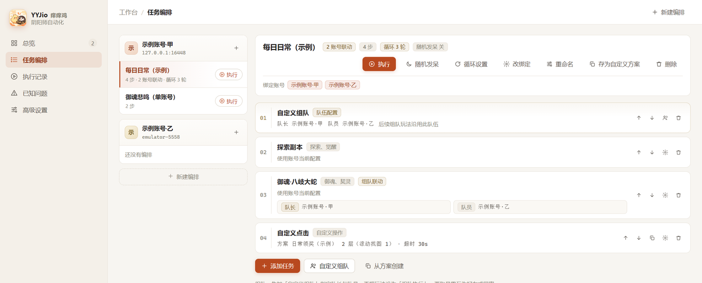
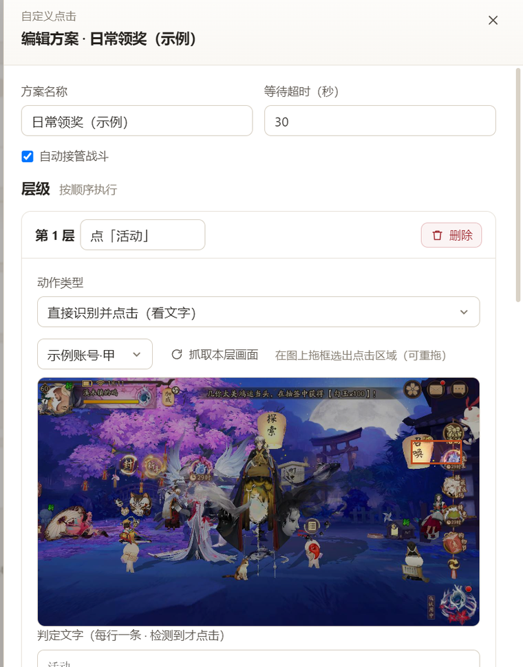
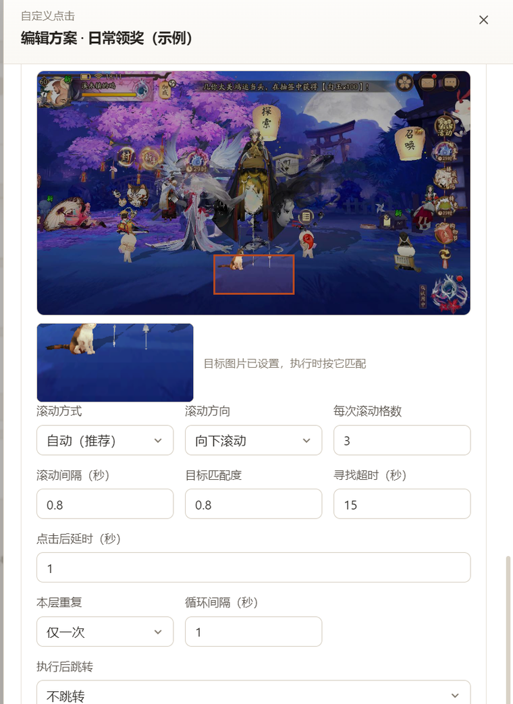
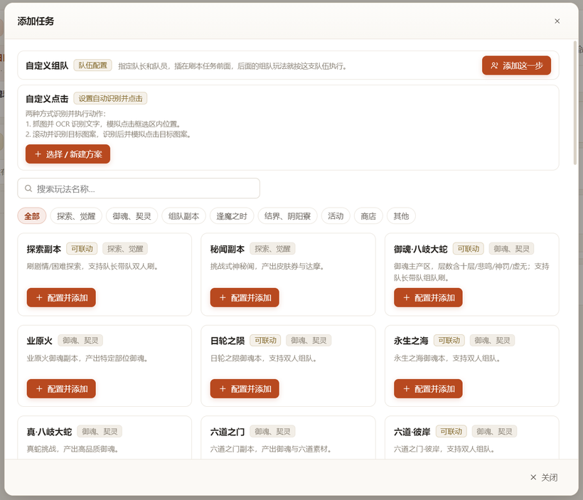

该有的都有，不该有的都砍了
只做三件事：把账号管好、把任务排好、把你自己想点的东西点出来。
多开与账号绑定
一个账号一台模拟器，绑定即用。绑定后自动从游戏画面读出昵称、截下圆形头像，不用手填。
任务编排
探索、御魂、觉醒、活动……拖成一条流水线，支持循环次数、随机发呆、多账号联动。
自定义点击（OCR）
抓当前画面，框出要点的位置，写上要识别的文字。看得到文字才点，看不到就等你下次。
滚动寻找并点击
给一张目标图，程序一边滚动一边匹配，命中就点它。列表翻页、活动滚动页都能用。
自定义组队
指定队长与队员，后面的御魂、觉醒、探索自动沿用这支队伍，队长建房、队员接受邀请。
执行记录与实时日志
每个任务一行开始 / 结束 / 耗时，日志坞里是引擎原话，出问题能直接看到卡在哪一步。
编排表：左边是谁，右边做什么
一份编排表就是一个账号（或一组账号）的完整流程。改顺序、改参数、单独重跑某一步，都在这一页。

账号分组在左
账号下面挂着它的编排表，点一下就切换，多开不用来回找。
步骤可上移下移
每行都能改参数、临时禁用、删除；「执行」默认按当前顺序从头跑。
进度与状态在卡片上
正在跑的任务会显示在账号卡片第二行，日志坞会随任务自动展开。
从装好到跑起来，五步
准备：Windows 10 / 11、一个模拟器（MuMu 12 已验证），游戏分辨率固定 1280×720。
安装并启动
运行安装包，装到非系统盘也可以。首次启动会自动下载并安装 Python 运行时（约 220 MB，仅这一次），之后完全离线可用。
- 运行时里带好了引擎需要的全部依赖（Python 3.10 + OpenCV / numpy / requests 等），不用另装 Python。
- 下载慢或没网，可以手动下载运行时包，在向导里选「本地 zip」安装。
打开模拟器，确认 adb 能连上
先启动模拟器并进入游戏，回到控制台点「刷新设备」。看到设备出现在「未绑定的模拟器」里就说明 adb 通了。
- MuMu 12 单开默认 127.0.0.1:16384，多开依次 +32。
- 没有自动扫到，可以在「绑定新账号」里直接填地址再点「连接」。
绑定账号
点设备那行的「绑定为账号」，或右上角「绑定新账号」。实例名只是配置文件名（如 oas1），昵称和头像会自动从游戏画面左上角识别，识别不到也能手填。
建编排表、加任务
进「任务编排」→「新建编排」→「添加任务」，按类别挑玩法。想组队就先加一条「自定义组队」，再给玩法打开「组队执行」。
执行，盯日志
点「执行」开跑，底部日志坞显示引擎实时输出；跑完在「执行记录」里看每个任务的耗时与结果。
自定义功能：把「你想点的」变成任务
引擎自带的是固定玩法。活动页、领取弹窗、列表翻页这种「只有你知道在哪」的东西，用自定义点击和自定义组队补上。
自定义点击
一份方案由若干「层」组成，从第 1 层开始按顺序执行：每层先判定，命中后按框选区域点一下，再等一段时间进下一层。 每层可以选择两种动作类型：
直接识别并点击：命中 / 未命中是两条独立配置线，可以只开一条。每条都能单独框选点击位置、设点击后延时、选接下来去第几层； 命中与否用 OCR 文字（可多行）和置信度判断。未命中那条还可以直接勾「结束方案」——等不到目标就把这份方案跑完。
滚动寻找并点击：先框「鼠标停留区域」，再框出要找的目标图案。执行时在停留区里随机落点，每次滚动截一帧匹配，命中就点目标图的中心。 找不到时可以选：不处理（本层失败）/ 点一块区域 / 跳转到某层 / 结束方案。
| 参数 | 说明 |
|---|---|
| 动作类型 | 直接识别并点击 / 滚动寻找并点击，同一份方案里可以混用。 |
| 判定文字 | 每行一条，全部命中或命中任意可选；找不到就等下一轮。 |
| 命中时 / 未命中时 | 两条独立配置，各自框选位置、延时、跳转；未命中可以勾「结束方案」。只开一条也能跑。 |
| 没找到时 | 滚动层专用：不处理 / 点一块区域 / 跳转到某层 / 结束方案。 |
| 点击区域 | 在图上拖一个框，点击会落在框内随机位置，不是死点。 |
| 置信度 | OCR 得分门槛，文字糊、字体花时往下调。 |
| 滚动方式 | 自动（能用滚轮就用滚轮，否则改成手指拖动）/ 鼠标滚轮 / 手指拖动。 |
| 滚动方向 / 格数 / 间隔 | 向下或向上，每次滚几格，两次滚动之间停多久。 |
| 目标匹配度 | 模板匹配门槛，0.8 表示八成相似才点。 |
| 寻找超时 | 滚了这么久还没找到就放弃这一层，避免一直滚。 |
| 本层重复 / 循环间隔 | 仅一次、重复 N 次、一直循环，适合连点与翻页。 |
| 执行后跳转 | 点完跳到指定层，做简单的循环流程。 |



自定义组队
多开才用得上：先在编排里加一条「自定义组队」，指定谁是队长、谁是队员；后面的玩法（御魂、觉醒、探索、日轮之陨……） 把模式切到「组队执行」，就会自动沿用这支队伍 —— 队长负责建房和邀请，队员负责接受邀请。
加一条「自定义组队」
在「添加任务」抽屉顶部，选队长账号，再勾队员，可以不是第一个账号。
给玩法开「组队执行」
只有带「可联动」标记的玩法支持组队，切换后步骤卡片会显示队长与队员。
确认昵称与好友关系
两个账号需要互为好友或同寮，队员在线并停在庭院，队长会按昵称在好友列表里找人。
任务包：别人做好的点击流程，装进来就能用
把一份「自定义点击」方案（含参考画面、目标图案、点击区域与各层参数）打成 .yyjio-task 文件，
就能发给别人 —— 对方装好后直接加进自己的编排表。
装一个任务包
任务编排 → 添加任务 → 分类选 自定义任务，然后二选一：
- 在线刷新：从官方任务库（TesBot/YYJio-Tasks）拉清单，点「安装」即可；已装过的会显示「更新到 x.y.z」。
- 从文件导入：选别人发你的
.yyjio-task文件，先看作者/版本/简介与层数，确认再装。
装好后卡片上点 加到编排，它就成了编排表里的一个步骤，和其它玩法一样排顺序、跑循环。
包名@版本」，作者更新到 1.2.0 不会偷偷改掉你已经在用的 1.1.1 ——
要升级得自己再装一次。
任务包会一直更新
新的任务包做好后会发布到任务库，你在客户端点一次 在线刷新 就能看到； 已经装过的会显示 更新到 x.y.z，点一下就换成新版本，不用自己再去找、再装一遍。
加了「在线刷新」，就不用盯着群里有没有新包 —— 打开这个分类，有更新就会出现。
| 项目 | 说明 |
|---|---|
| 获取方式 | 在线刷新（推荐）／ 从文件导入别人发的 .yyjio-task |
| 版本 | 编排引用的是「包名@版本」，更新不会悄悄改掉你正在用的旧版本 |
| 兼容 | 坐标基于 1280×720；不执行任何脚本，只有参考画面与点击区域 |
跑之前先确认这几件事
大部分「卡住不动」「点不中」，都是下面几条没配好。
分辨率 1280×720
模拟器分辨率必须是 1280×720，否则框选坐标全错位，任务也跑不起来。
默认主题装扮
庭院皮肤换回初始庭院，关闭自定义战斗主题、幕间主题恢复默认 —— 否则会反复卡同一界面或抓不到结算。
控制方式
默认 minitouch 点击最稳。滚动找图在 adb / minitouch 下会走「手指拖动」，用滚轮需要能拿到模拟器窗口。
常见问题
需要自己装 Python 或 Git 吗？
不需要。安装包自带引擎，首次启动会自动下载 Python 运行时（约 220 MB，Python 3.10 + 引擎全部依赖，仅第一次）。
没有网络或下载失败时，可以手动下载 oas-python-runtime-1.0.1.zip，启动向导里选「本地 zip」安装即可；运行时装好后就不再需要联网。
安装包为什么不能放在某些目录里双击？
请把安装包放在桌面、下载目录或 U 盘这类普通位置再运行；放在受限目录（例如被安全软件监控的工程目录）里可能报「Error writing temporary file」。
绑定账号后昵称是错的 / 没有头像？
识别取的是游戏画面左上角的角色信息，游戏要在主界面（庭院）并加载完成。识别失败不影响绑定，可以点「编辑资料」手填昵称，或再点「从当前画面重新识别」。
滚动找图一直找不到怎么办？
先把「目标匹配度」降到 0.7，确认目标图案在滚动方向上确实会出现；再看「滚动方式」是不是「手指拖动」但游戏页面需要滑动而不是拖拽。
怎么检查新版本？
左下角版本号旁边的「检查更新」会查询 GitHub Releases；发现新版本会提示并可以直接打开下载页。
数据存在哪？卸载会丢吗？
账号实例、自定义方案、编排表、头像都保存在安装目录的 resources/engine/config 下，卸载时会被备份出来；换版本安装也会尽量迁移。
下载 YYJio
Windows 10 / 11 安装包，约 110 MB。引擎随包携带，首次启动自动补 Python 运行时，之后离线可用。